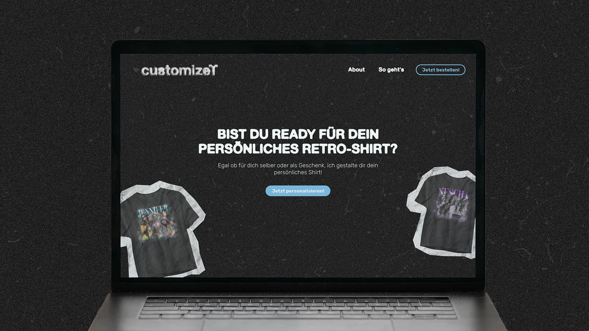
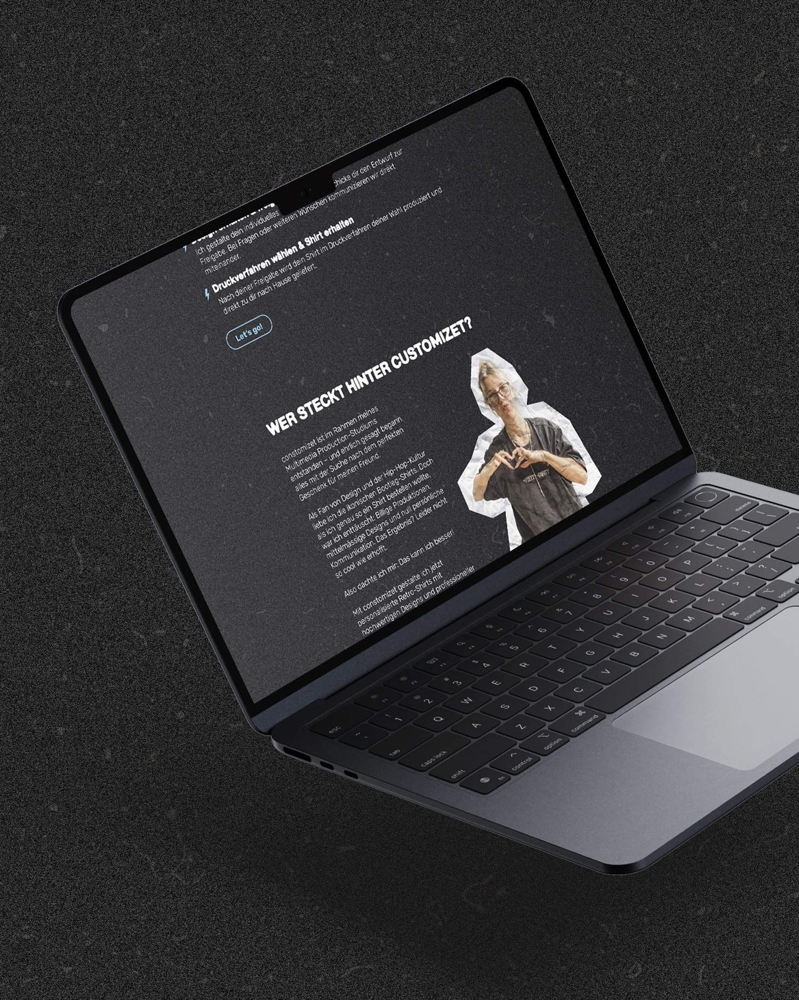
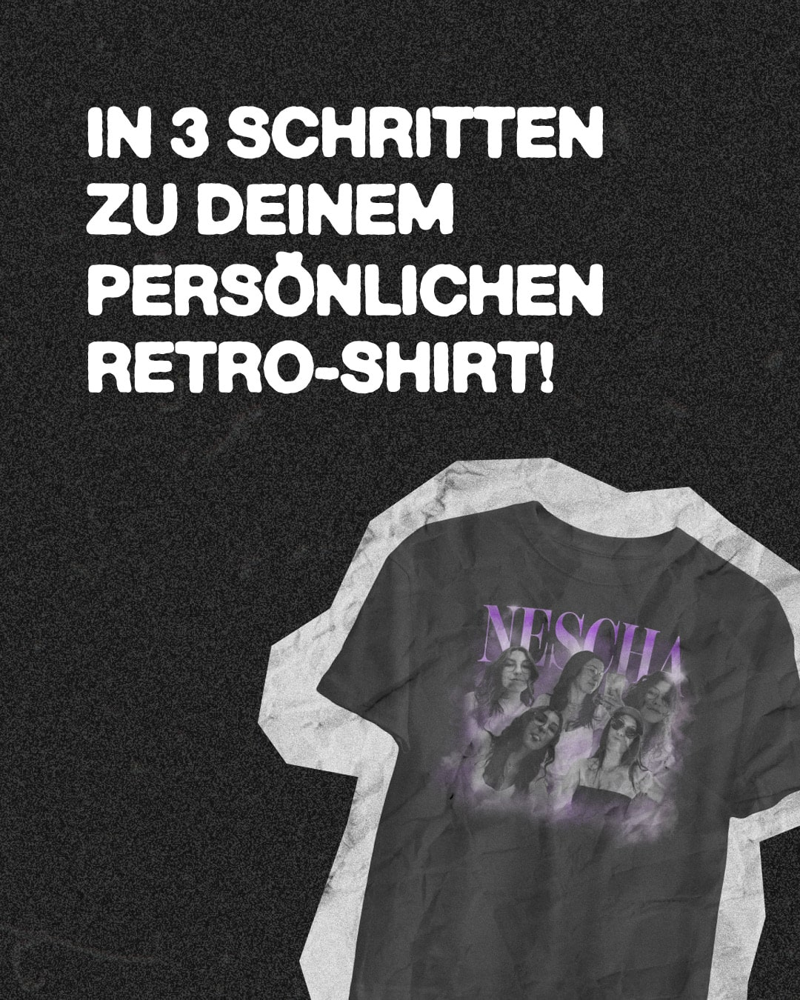
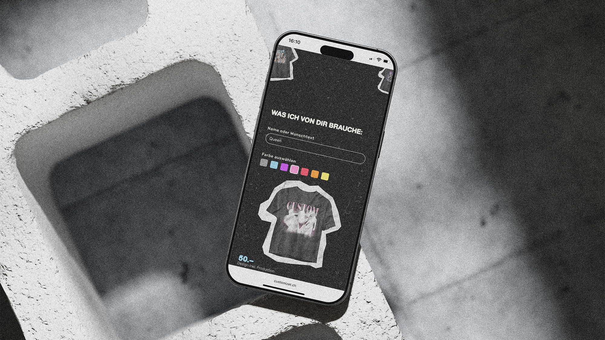

customizet.ch ist aus meiner Leidenschaft für den 90's-Hiphop-Vibe entstanden. Als ich meinem Freund zu Weihnachten ein Bootleg-Shirt schenken wollte, war ich vom Ergebnis enttäuscht: schlechte Qualität, falsche Grösse und null Einfluss darauf, wie das Shirt am Ende aussieht. Ich hatte nur Bilder hochgeladen und ein fertiges Produkt erhalten. Als Designerin war es mir fast peinlich, es so zu verschenken. Da dachte ich mir: Das kann ich besser. Also habe ich eine Brand geschaffen, die diesen Stil feiert und persönliche Bootleg-Shirts möglich macht, hochwertig, individuell und fernab von Massenware.
Bei mir laden Kund:innen ihre Bilder hoch, wählen eine Farbe und ihren Wunschtext und schicken das Formular ab. Daraus erstelle ich einen Entwurf, melde mich damit bei ihnen und wir feilen so lange daran, bis er bereit für den Druck ist. Von der ersten Idee bis zum fertigen Produkt habe ich das Projekt komplett alleine umgesetzt: Logo, Branding, UI/UX in Figma, die Website mit HTML, CSS und JavaScript und das Backend mit PHP und Datenbank.
Trotz aller Hürden hat mich das Projekt unglaublich motiviert, weil es Kreativität, Design und Programmierung so verbindet, wie es für mich stimmig ist. Die ersten Shirts sind bei Kund:innen angekommen, bisher im Freundeskreis, und Rückmeldungen wie diese freuen mich riesig: «heyhey, han imfall tshirts letscht wuche überchu🤩 genau so wienis mir vorgstellt ha! dankä vielvielmal💓». Das Projekt bedeutet mir viel, weil ich ein Problem erkannt und direkt selbst die Lösung dafür gebaut habe, eine Brand, hinter der ich zu 100% stehe.


